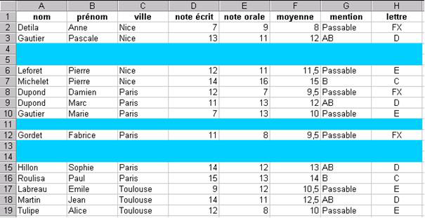

Bonus 1 - Le débogage
Le débogage consiste à régler les erreurs directement liées au code d’un programme. Trois types d’erreur peuvent affecter un programme écrit en VBA :
des erreurs de compilation qui surviennent lorsque VBA rencontre une instruction qu’il ne reconnaît pas ;
des erreurs d’exécution ;
des erreurs logiques : le programme s’exécute mais le résultat obtenu ne correspond pas à celui attendu.
Les erreurs de compilation et d’exécution
La première étape pour tester un programme consiste à compiler le programme à l’aide de la commande DEBOGAGE - COMPILER VBAPROJECT. Les erreurs de compilation sont mises en évidence. Recommencer la compilation jusqu’à ce que toutes les erreurs de compilation soient corrigées.
Lorsqu’il n’y a plus d’erreurs de compilation, exécuter le programme à l’aide de la commande EXECUTION - EXECUTER SUB/USERFORM.
Si une erreur d’exécution est générée, l’instruction coupable est mise en évidence. Corriger l’erreur et réinitialiser le programme à l’aide de la commande EXECUTION - REINITIALISER. Recommencer l’exécution jusqu’à ce que toutes les erreurs d’exécution soient corrigées.
Les erreurs logiques - Exercice guidé
Il s’agit maintenant de corriger les erreurs logiques qui sont les plus difficiles à repérer. L’éditeur de Visual Basic propose plusieurs outils de débogage dans le menu DEBOGAGE.
1) Ouvrir le classeur ELEVES.XLS.

2) Ouvrir l’éditeur de Visual Basic à partir du classeur ELEVES.XLS.
3) Ouvrir un nouveau module de code à l’aide de la commande INSERTION - MODULE. Une fenêtre de code MODULE1 s’ouvre.
4) Dans le module de code MODULE1, saisir la procédure suivante qui permet de supprimer les lignes vides de la liste de données :
Sub SupprLignesVides()
Dim MaPlage As Range
Dim Cellule As Range
Set MaPlage = Range("A1:A19")
For Each Cellule In MaPlage
If IsEmpty(Cellule) Then
Rows(Cellule.Row).Delete
End If
Next Cellule
End Sub
5) Exécuter la procédure SupprLignesVides. On constate que s’il existe deux lignes vides consécutives, la deuxième ligne n’est pas supprimée.
6) Insérer de nouveau des lignes dans la liste de données pour obtenir la même liste de données qu'au départ (celle du point (1)).
7) Dans l’éditeur de Visual Basic, espionner la valeur des variables Cellule.Row et Cellule à l’aide de la commande DEBOGAGE - AJOUTER UN ESPION. La fenêtre ESPIONS s’ouvre.
8) Réduire la fenêtre de l’éditeur de Visual Basic de façon à voir le classeur EXCEL au second plan.
9) Exécuter pas à pas la procédure SupprLignesVides à l’aide de la commande DEBOGAGE - PAS A PAS DETAILLE (touche F8). Observer attentivement l’effet de chaque instruction de la procédure sur le classeur Excel et examiner les valeurs prises par les variables Cellule.Row et Cellule.
Lorsque la procédure atteint la cellule A4, la ligne 4 est supprimée. Cela a pour conséquence de décaler toutes les cellules vers le haut. La cellule A5 passe alors en A4, la cellule A6 en A5... La boucle For Each...Next traite ensuite la cellule suivante soit la cellule A5. Le contenu de la cellule précédemment en A5 ne sera donc pas traité, puisque cette cellule est passée en A4.
10) Arrêter l’exécution de la procédure à l’aide de la commande EXECUTION - ARRET.
11) Une solution possible au bogue est de dérouler une boucle commençant par la dernière cellule de la liste de données.
Sub SupprLignesVidesCorrigée()
Dim compteur As Integer
Dim DerLigne As Integer
Dim MaPlage As Range
Set MaPlage = Range("A1:A19")
DerLigne = MaPlage.Rows.Count
For compteur = DerLigne To 1 Step -1
If IsEmpty(Range("A" & compteur))
Then Rows(compteur).Delete
Next compteur
End Sub